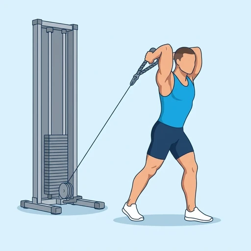
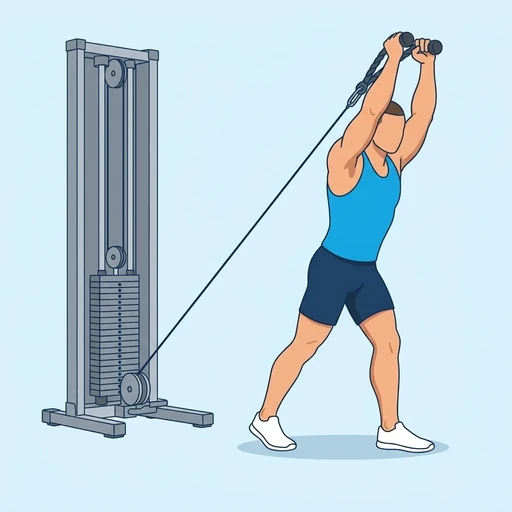

Cable Overhead Tricep Extension
A cable triceps exercise: facing away from the weight stack, you hold a rope behind your head and straighten your elbows to push it up and overhead. The overhead position stretches the long head of the triceps, and the cable keeps tension on the muscle through the whole movement.
Upper arms · Cable Machine · Intermediate


Muscles worked by the Cable Overhead Tricep Extension
Primary
Secondary
Also called: tricep, triceps, triceps brachii, horseshoe, tris.
Equipment
Also called: cable pulley, functional trainer, cable crossover, cable column, cable station, pulley machine.
How to do the Cable Overhead Tricep Extension
- Attach a rope to the low pulley and select a light weight.
- Take the rope in both hands, turn away from the stack and step forward into a staggered stance so the cable pulls you back.
- Raise the rope overhead with your elbows bent and your upper arms close to your ears, so your hands are behind your head.
- Brace your trunk and keep your upper arms still, then straighten your elbows to push the rope up until your arms are fully extended overhead.
- Pause briefly at the top, then bend your elbows to lower the rope back behind your head under control.
- Repeat for the planned repetitions.
Form tips
- Keep the elbows pointing forward and the upper arms still; letting them flare out or drift turns the extension into a press.
- Step far enough forward that the cable holds you steady, and avoid arching your lower back as the arms go overhead.
- Use a weight you can control through the full stretch; heavy loads pull the elbows apart.
At a glance
| Body part | Upper arms |
|---|---|
| Category | Strength |
| Force type | Push |
| Mechanic | Isolation |
| Difficulty | Intermediate |
| Equipment | Cable Machine |
| Goals | Hypertrophy |
| Tags | Knee safe, No axial load, Lower back safe, Shoulder safe |
| MET | 5.0 (metabolic equivalent, for calorie estimates) |
| Unilateral | No |
| Bodyweight | No |
| Dataset id | cable-overhead-tricep-extension |
Cable Overhead Tricep Extension in German & Spanish
| German | Kabelzug Overhead Trizeps-Extension |
|---|---|
| Spanish | Extensión de Tríceps por Encima de la Cabeza con Cable |
Descriptions, instructions and tips ship in all three languages in the JSON.
Related exercises
Exercise data (JSON)
The record below is exactly what exercises.json ships for this exercise — names, descriptions, instructions and tips in English, German and Spanish.
{
"id": "cable-overhead-tricep-extension",
"name_en": "Cable Overhead Tricep Extension",
"name_de": "Kabelzug Overhead Trizeps-Extension",
"name_es": "Extensión de Tríceps por Encima de la Cabeza con Cable",
"description_en": "A cable triceps exercise: facing away from the weight stack, you hold a rope behind your head and straighten your elbows to push it up and overhead. The overhead position stretches the long head of the triceps, and the cable keeps tension on the muscle through the whole movement.",
"description_de": "Eine Trizepsübung am Kabelzug: Mit dem Rücken zum Gewichtsblock hältst du ein Seil hinter dem Kopf und streckst die Ellbogen, um es nach oben und über den Kopf zu drücken. Die Überkopfposition dehnt den langen Kopf des Trizeps, und das Kabel hält die Spannung im Muskel während der gesamten Bewegung.",
"description_es": "Un ejercicio de tríceps con cable: de espaldas a la pila de pesas, sujetas una cuerda detrás de la cabeza y extiendes los codos para empujarla hacia arriba y por encima de la cabeza. La posición sobre la cabeza estira la cabeza larga del tríceps y el cable mantiene la tensión en el músculo durante todo el movimiento.",
"category": "strength",
"force_type": "push",
"mechanic": "isolation",
"difficulty": "intermediate",
"equipment": "cable",
"body_part": "upper_arms",
"primary_muscles": [
"triceps_brachii"
],
"secondary_muscles": [
"anterior_deltoid"
],
"goals": [
"hypertrophy"
],
"tags": [
"knee_safe",
"no_axial_load",
"lower_back_safe",
"shoulder_safe"
],
"variation_group": "overhead-tricep-extension",
"is_unilateral": false,
"is_bodyweight": false,
"instructions_en": [
"Attach a rope to the low pulley and select a light weight.",
"Take the rope in both hands, turn away from the stack and step forward into a staggered stance so the cable pulls you back.",
"Raise the rope overhead with your elbows bent and your upper arms close to your ears, so your hands are behind your head.",
"Brace your trunk and keep your upper arms still, then straighten your elbows to push the rope up until your arms are fully extended overhead.",
"Pause briefly at the top, then bend your elbows to lower the rope back behind your head under control.",
"Repeat for the planned repetitions."
],
"instructions_de": [
"Befestige ein Seil am unteren Kabelzug und wähle ein leichtes Gewicht.",
"Nimm das Seil in beide Hände, drehe dich vom Block weg und tritt in einen Schrittstand nach vorn, sodass das Kabel dich nach hinten zieht.",
"Hebe das Seil mit gebeugten Ellbogen über den Kopf, die Oberarme nah an den Ohren, sodass deine Hände hinter dem Kopf sind.",
"Spanne den Rumpf an und halte die Oberarme ruhig, strecke dann die Ellbogen, um das Seil nach oben zu drücken, bis deine Arme über dem Kopf voll gestreckt sind.",
"Halte oben kurz inne und beuge dann die Ellbogen, um das Seil kontrolliert wieder hinter den Kopf zu senken.",
"Wiederhole für die geplante Anzahl an Wiederholungen."
],
"instructions_es": [
"Engancha una cuerda a la polea baja y selecciona un peso ligero.",
"Agarra la cuerda con ambas manos, gírate de espaldas a la pila y da un paso al frente en posición escalonada para que el cable tire de ti hacia atrás.",
"Sube la cuerda por encima de la cabeza con los codos flexionados y la parte superior de los brazos cerca de las orejas, de modo que las manos queden detrás de la cabeza.",
"Aprieta el tronco y mantén quietos la parte superior de los brazos, luego extiende los codos para empujar la cuerda hacia arriba hasta que los brazos queden completamente estirados sobre la cabeza.",
"Haz una breve pausa arriba y luego flexiona los codos para bajar la cuerda de nuevo detrás de la cabeza de forma controlada.",
"Repite el número de repeticiones previsto."
],
"tips_en": [
"Keep the elbows pointing forward and the upper arms still; letting them flare out or drift turns the extension into a press.",
"Step far enough forward that the cable holds you steady, and avoid arching your lower back as the arms go overhead.",
"Use a weight you can control through the full stretch; heavy loads pull the elbows apart."
],
"tips_de": [
"Lass die Ellbogen nach vorn zeigen und die Oberarme ruhig; wenn sie nach außen ausscheren oder wandern, wird aus der Extension ein Drücken.",
"Tritt weit genug nach vorn, dass das Kabel dich stabil hält, und vermeide ein Hohlkreuz, wenn die Arme über den Kopf gehen.",
"Verwende ein Gewicht, das du durch die gesamte Dehnung kontrollieren kannst; schwere Lasten ziehen die Ellbogen auseinander."
],
"tips_es": [
"Mantén los codos apuntando al frente y la parte superior de los brazos quietos; si se abren o se desplazan, la extensión se convierte en un press.",
"Da un paso lo bastante largo al frente para que el cable te mantenga estable y evita arquear la zona lumbar al subir los brazos sobre la cabeza.",
"Usa un peso que puedas controlar en todo el estiramiento; las cargas pesadas separan los codos."
],
"met": 5.0,
"images": {
"flat": {
"start": "images/flat/cable-overhead-tricep-extension-start.webp",
"peak": "images/flat/cable-overhead-tricep-extension-peak.webp"
}
}
}Fetch just this exercise
const { exercises } = await fetch(
"https://exercise-dataset.com/exercises.json"
).then(r => r.json());
const ex = exercises.find(e => e.id === "cable-overhead-tricep-extension");Free for personal and commercial in-app use with attribution (“Exercise data by RepDB”) — see the license and ready-made attribution snippets. Redistributing the data as a dataset or API is not permitted.